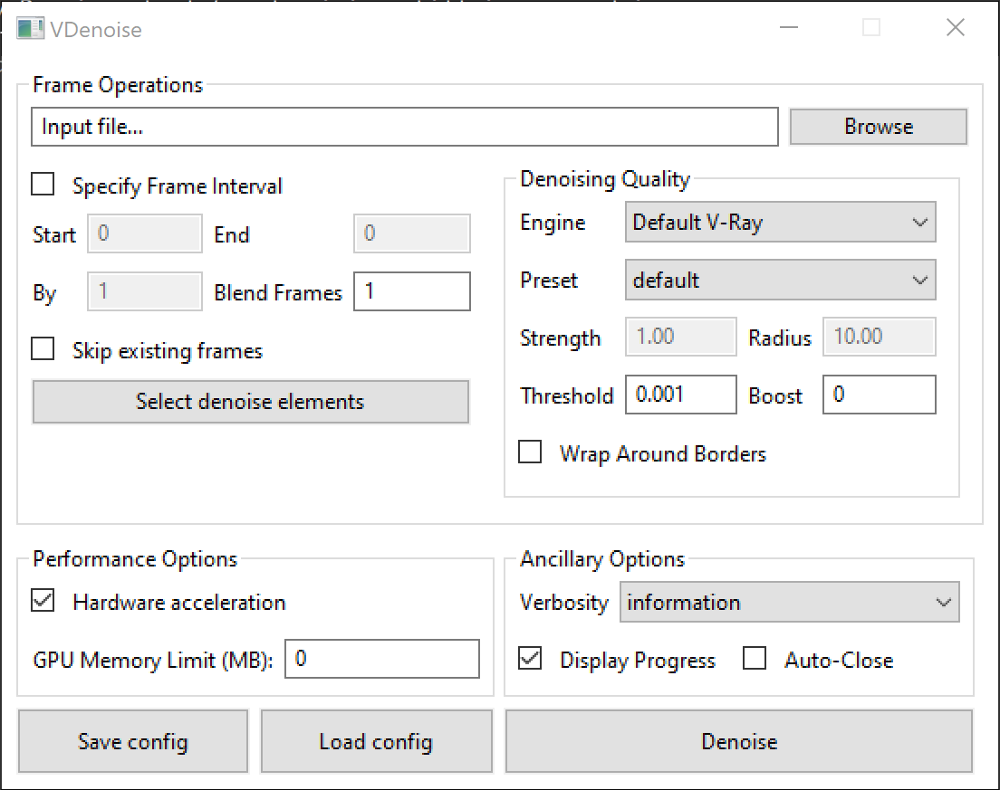
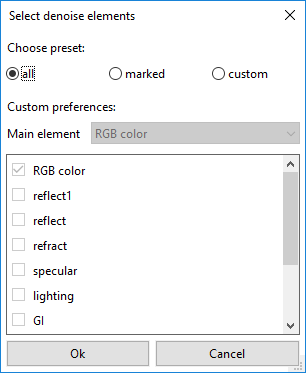
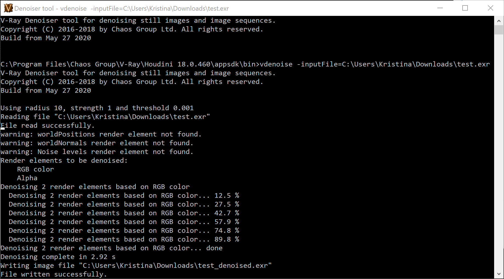

Denoiser Tool
This page contains information on the V-Ray standalone denoising tool.
Overview
The V-Ray installation includes a standalone denoising tool called vdenoise that can be used to denoise still images or animations outside of 3ds Max. This is especially useful for animations because the standalone tool can look at multiple frames at once and produce a better denoising result. The vdenoise tool works with either .vrimg or multichannel OpenEXR files and writes out files with the same format. You can write those files out of 3ds Max through the V-Ray raw image file output options in the V-Ray Frame Buffer rollout.
Installation
The Denoiser tool is installed along with V-Ray for 3ds Max and can be found through Start Menu > Programs > V-Ray for 3ds Max > Tools > Denoiser Tool.
Start the vdenoise executable from C:\Program Files\Chaos Group\V-Ray\3ds Max 201X\bin
Generating the Needed Render Elements
The denoiser needs several render elements in order to work optimally. The easiest way to generate these render elements is to add the VRayDenoiser Render Element to your 3ds Max scene.
Required Render Elements
The required render elements are listed below. Add the VRayDenoiser or Denoiser Render Element to your scene to generate the necessary render elements automatically.The standalone denoiser will still run when some or all of these render elements are missing, but results might be too blurry.
For single pass RGB denoising:
-
Noise level (named noiseLevel) - The denoiser relies heavily on this render element to provide information used during the denoising operation.
-
Defocus amount (named defocusAmount)
-
World positions (named worldPositions or wpp)
-
World normals with bump mapping (named worldNormals)
-
Diffuse filter (named diffuseFilter or VRayDiffuseFilter)
-
Reflection filter (named reflectionFilter or VRayReflectionFilter)
-
Refraction filter (named refractionFilter or VRayRefractionFilter)
GUI Usage
Running vdenoise without any parameters, or from the Start Menu on Windows, will open the GUI version of the tool. This allows you to denoise still images or animations; as well as save and load preferred denoise configurations.
Input File... – Specifies the .vrimg/multichannel .exr image, .vlplfx, or sequence of images to denoise. Wildcards (?) can be used to define a sequence. For example, if the images in the sequence are named anim_0001.exr, anim_0002.exr, etc., the question mark (?) replaces the digits in the sequence's file names. In this case - anim_????.exr
Specify Frame Interval – When enabled, specifies which frames to process.
Start – Specifies the start frame.
End – Specifies the end frame.
By – Specifies the frame increment step.
Blend Frames – Specifies the number of adjacent frames to use when denoising animations. This reduces flickering between adjacent frames.
Skip existing frames – When enabled, skips an input image if an output image with the corresponding file name already exists.
Select denoise elements – Opens the Select denoise elements dialog that allows selecting which color elements to denoise.
Engine - Specifies the denoising engine. For more information, visit the Denoising Engines section.
Default V-Ray - The default render engine. It is slower but more accurate and can denoise multiple render elements.
NVIDIA AI - Requires a compatible NVIDIA GPU. This render engine is faster but less accurate and it only denoises the RGB channel.
Intel Open Image - This render engine is faster but less accurate and it only denoises the RGB channel.
Preset – Selects a preset for the strength of the denoiser.
Default – Applies a mid-level denoising.
Mild – Applies a less intensive denoising than the Default preset.
Strong – Applies a stronger level of denoising than the Default preset.
Custom – Allows the Strength and Radius parameters to be set to custom values.
Strength – Specifies the strength when Preset is set to custom. Large values remove noise more effectively but may blur the image too much. The default value 1.0 uses the noise level render element as it is.
Radius – Specifies the pixel radius for denoising when Preset is set to custom. Large values slow down the denoiser, but may produce smoother results.
Threshold – Specifies threshold for denoising when the noise levels render element is missing. Typically, this is equal to the noise threshold for anti-aliasing in V-Ray.
Boost – Boosts the effect of the selected preset.
Wrap Around Border - Improves quality when denoising a 360 panorama view. Reduces artifacts when gluing left and right borders.
Hardware acceleration – When enabled, the denoiser attempts to use all suitable OpenCL (GPU) devices, and fall back to the CPU if unsuccessful.
GPU Memory Limit (MB) – Sets a maximum GPU memory usage limit when Hardware acceleration is enabled. The default 0 uses all available memory.
Verbosity – Specifies the type of information that is printed upon denoising.
Display Progress – When enabled, the denoising result is displayed in a preview window.
Auto-Close – Automatically closes the preview window after the denoising is complete.
Save config – Saves the current denoise configuration into an .xml file.
Load config – Loads a previously saved .xml denoiser configuration.
Denoise – Denoises the selected frame(s).

Select Denoise Elements Dialog

Choose preset – Allows you to select the color elements for denoising:
all – Denoises all color elements based on RGB color as the main element.
marked – Denoises all color elements that are marked for denoising in the host application (before the image is rendered) based on RGB color as the main element.
custom – Allows you to manually select the color elements for denoising.
Main element – The main element on which the denoising of all elements is based.
The denoising Render Elements workflow with the GUI version of the Denoiser Tool is as follows:
-
Load the multichannel .exr file into the latest VDenoiser.
-
Select the Render Elements you want to denoise in the Select denoise elements dialog.
-
The VDenoise saves the result in a new file that contains the denoised Render Elements.
-
Load the denoised Render Elements into compositing software.
Command Line Usage
The denoiser can also be used as a command-line utility without GUI display. Simply run the executable with one of the following commands to denoise an image or a sequence of images from within your command-line interface. You can also change the settings and behavior of the denoiser through CLI. To do so, please refer to the Denoiser Options tables below for a list of all available options.
Denoising Still Images
To denoise a single .vrimg or .exr image, use the following format for the command:
vdenoise -inputFile="path\to\image.exr"
where path\to\image.ext is the path and file name of the .vrimg or .exr file that you want to denoise.
For example, if the file you want to denoise is called render.exr and is located in the folder c:\renderoutput, the full command will be
vdenoise -inputFile="c:\renderoutput\render.exr"
Denoising Animations
To denoise a sequence of images, you must have all frames already rendered, as the denoiser needs to look at several frames at the same time. Use the following format for the command:
vdenoise -inputFile="path\to\sequence_????.exr"
where the question mark (?) replaces the digits in the sequence's file names.
For example, if the images in the sequence are named anim_0001.exr, anim_0002.exr, etc. and are located in the folder c:\renderoutput, the full command will be
vdenoise -inputFile="c:\renderoutput\anim_????.exr"
Denoiser Options
You can control the denoiser through optional switches on the command line. To list all available options in the command prompt window, run the denoiser without any arguments (vdenoise command) or use the -help switch:
vdenoise -help
The table below shows the optional switches, which are also displayed by the vdenoise -help command. To use a switch, precede the switch with a hyphen (-) and follow it with an equals sign (=) and the desired parameter, as shown in the table.
|
Switch |
Description |
|
-configFile="ConfigFile.xml" |
Specifies the config file from which all denoise parameters are set. If other options are specified, they are ignored. |
|
-inputFile="<fileName.exr>" |
Specifies the input . vrimg or .exr file. Can contain paths and wildcards such as a question mark (?) to indicate digits in file names. Examples: vdenoise -inputFile="c:\renderoutput\render.exr" - Denoise a single image named render.exr located in the c:\renderoutput folder. Note that in order to denoise a sequence of images you must have all frames already rendered, as the denoiser needs to look at several frames at the same time. |
|
-lensEffectsParams="filename.vrscene" |
Specifies the config file from which all lens effects parameters are set. With this option you can apply Lens Effects to the denoised image, the settings of which are taken from the .vrscene file. |
|
-lensEffectsParams ="filename.vlplfx" |
The New VFB exports lens effects in a .vlplfx file format. vdenoise -inputfile=C:\Users\UserName\Desktop\LENS.exr -lensEffectsParams=C:\Users\UserName\Desktop\LENS.vlplfx - Denoises the image and then the lens effects configuration file is applied. |
|
-mode=strong | default | mild |
Sets one of three predefined presets for the radius/threshold/noise level multiplier. |
|
-boost=0|1|2 |
Boosts the effect of the selected preset. |
|
-skipExisting=0|1 |
Determines the file-processing behavior when a corresponding output image already exists. |
|
-frames= N-Na; Nb | N-Na, Nc |
Specifies the frames and/or frame intervals to process. Example: "-frames= 1-100; 160-180; 200;201" - the denoiser works with frames 1 to 100 and 160 to 180 as well as frames 200 and 201 from the animation. "-frames= 1-200, 2" - the denoiser works with every second frame from 1 to 200. |
|
-denoiseElements="elementName{;elementName}" -denoiseElements=all |
When used with <elementName>, specifies the render element(s) that should be denoised. The element names can contain wildcards and are not case sensitive. If not specified, the RGB Color element, Alpha, and all color elements that are marked for denoising in the input file are denoised. The first matched render element specifies the main element on which the denoising of all elements will be based. For example, "rgb color;vrayreflection;*lightselect*" will denoise the RGB Color, VRayReflection, and all light select elements, based on the RGB Color element. When used with "all", denoises all color elements in the input file based on the RGB Color element. |
|
-display= 0 | 1 |
Specifies whether to display a preview window with the denoising result. |
|
-autoClose=0 | 1 |
Specifies whether to automatically close the preview window after denoising is complete. |
|
-useCpu=1 |
Forces usage of CPU version even if OpenCL support is found. |
|
-useGpu=0 | 1 | 2 |
Specifies when to use GPU (OpenCL) or CPU version for denoising. |
|
-verboseLevel=0 | 1 | 2 | 3 | 4 |
Specifies the verbose level of information printed to the standard output. |
|
-outputDirectory="string" |
Specifies the full or relative path to an output directory for the denoised files. If the directory does not exist, it is created. If no output directory is specified, the output directory is the directory of the input files. |
Advanced Options
|
Switch |
Description |
|
-abortOnOpenCLError=0 | 1 |
Specifies the behavior of the denoiser when an error is encountered while attempting to use OpenCL. |
|
-strength=N |
Sets a value for the strength of the denoising based on the noise present in the noiseLevel Render Element. Larger values remove noise more aggressively but might blur the image too much. The default is 1.0, which uses the noise in the noiseLevel Render Element as is without adding any additional strength. |
|
-radius=N |
Specifies pixel radius for denoising. Larger values slow down the denoiser but might produce smoother results. The default is 10 pixels, which corresponds to the Default preset. |
|
-frameBlend=N |
Specifies the number of adjacent frames to use when denoising animations. Higher values help reduce flickering between adjacent animation frames. The default is 1, which uses one frame before and one frame after the current frame. |
|
-oclquery="<string>" |
Explicitly specifies which OpenCL devices should be used for denoising. Examples: |
|
-strips=N |
Forces image to be split into N strips for processing. The default is -1 (negative 1), which uses an algorithm to automatically determine the optimum number of strips. |
|
-autoRadius=0 | 1 |
Specifies whether to automatically adjust the denoising radius based on the level of noise present in the noiseLevel Render Element. |
|
-threshold=N |
Specifies a threshold for denoising when the noiseLevel Render Element is missing. This value is typically equal to the noise threshold for antialiasing in V-Ray. If this switch is not set, the denoiser relies on the noiseLevel Render Element and a threshold of 0.001 is used. |
|
-memLimit=N |
Forces the GPU memory usage limit to N gigabytes. The default value of 0 specifies that all available memory be used. |
|
-outputOffset=N |
Offsets the frame number (if present) of the output file. Example: -frames=0-20 -outputOffset=10 leads to output frame numbers: 0010,0011,0012,...,0030 and -frames=0-20 -outputOffset=-4 leads to: -004,-003,-002,...,0016 |
Output
When the standalone Denoise tool is run, it outputs information about the process, including settings, warnings, progress, and files written in the command prompt window.
